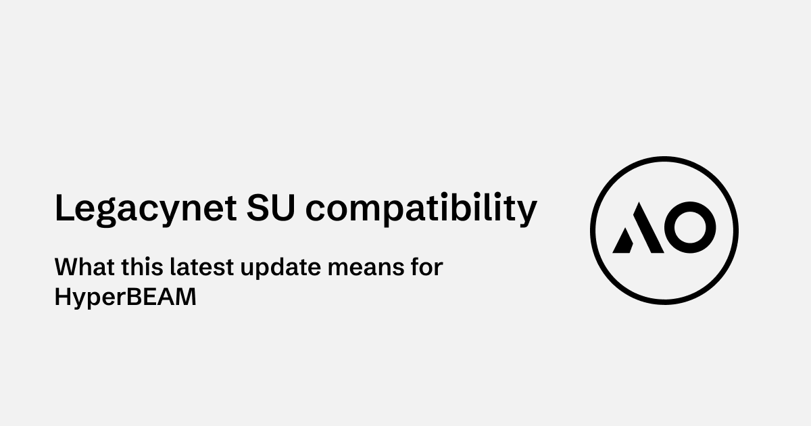
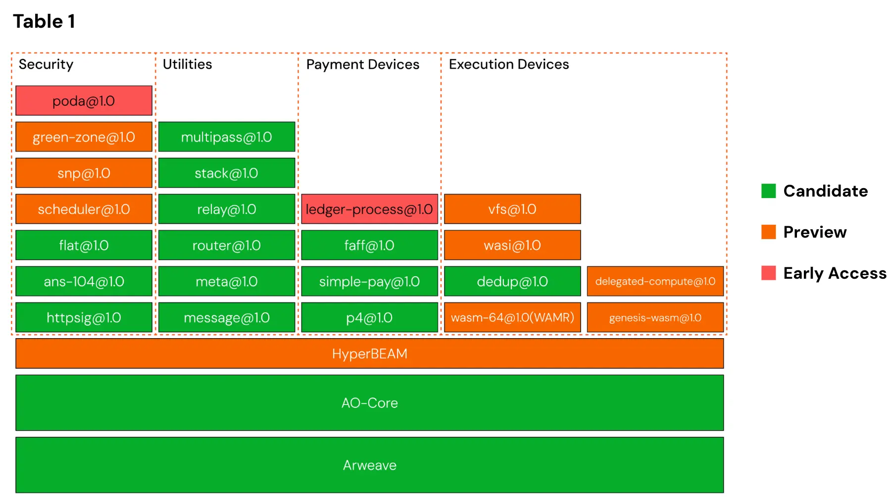
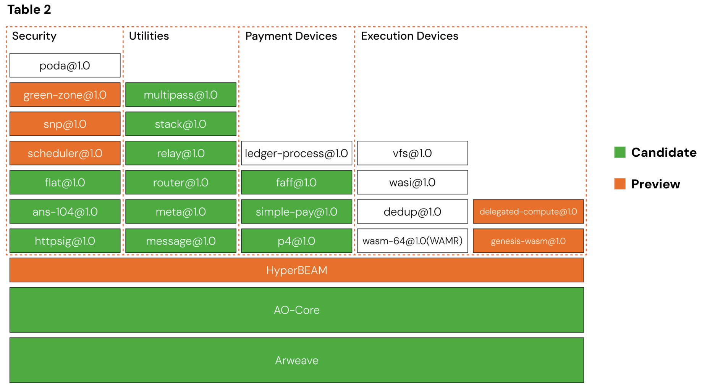

I. Introduction
AO-Core is a decentralized computing protocol designed to break away from traditional, centralized cloud models. Instead of relying on a single architecture, AO provides a flexible framework where multiple computational models, or devices, can interact. This approach enables trustless, scalable, and censorship-resistant computation.
The latest milestone in AO’s evolution is that legacynet processes can now execute on HyperBEAM. Until now, these two networks operated in isolation.
II. What this update enables
Previously, AO processes on legacynet and HyperBEAM ran separately, unable to interact. With this latest update, AO-Core can now directly execute and interact with existing legacynet-scheduled processes. This means:
- Legacynet processes can now run on HyperBEAM while still returning results to the legacynet environment.
- Computed messages can be exchanged between legacynet and mainnet processes, enabling seamless interoperability.
- HyperBEAM nodes now support decoding, scheduling, and storing messages using both AO’s standard HTTP signature format (~httpsig@1.0) and ANS-104 codecs.
III. Legacynet vs. Mainnet: What’s the difference?
To understand why this upgrade matters, it’s essential to distinguish between the two:
- Legacynet: AO’s original testnet, designed for experimentation and early deployments before AO-Core launched. While functional, it had limitations in scalability and execution speed due to its reliance on free compute nodes provided by Forward Research. Other organizations, such as AR.IO, also ran their own compute nodes to support infrastructure built on Arweave and AO.
- Mainnet (AO-Core): The production-ready, high-performance version of the AO protocol, built with a modular structure that allows multiple computational models to interact while ensuring state integrity, verifiability, and decentralization on Arweave. HyperBEAM serves as the client implementation for AO-Core, allowing developers to run their own nodes and provide services within the network, abstracting hardware provisioning from execution.
With the latest preview update to HyperBEAM, AO-Core is now approaching Milestone 3. A key point to note: AO processes themselves do not “live” on either AO mainnet or legacynet, they are simply data stored on Arweave. This update demonstrates that those processes can now be executed seamlessly on mainnet.
IV. AO milestones
This update is a major step in the transition from legacynet to mainnet. Here’s how it fits into AO’s roadmap:
Milestone 1 (Released February 9)
- AO-Core reached candidate-level stability, establishing its foundational infrastructure.
- Introduced payment devices, allowing users to pay operators for prioritized computation.
- Developer tools like AOS and aoconnect integrated payment functionality.

Milestone 2
- Introduced a preview version of HyperBEAM’s full-stack devices, enabling AO processes to run natively inside HyperBEAM.
- Added TEE-secured execution, improving security and verifiability.
- Watch the full HyperBEAM demo here.

Milestone 3
- Legacynet processes are now compatible with AO-Core, enabling applications built on testnet to run on HyperBEAM without code changes.
- This allows the community to migrate applications from the free legacynet compute cluster to HyperBEAM AO-Core nodes.
- Dexi is already testing the first migration to HyperBEAM, with more applications on the way.
Learn more about the AO release nomenclature here.
V. Why this matters
Free compute equals slow compute. Anyone who has used legacynet applications has likely experienced delays, as demand often outstrips available resources. When AO mainnet launched, many expected immediate performance improvements. However, legacynet compute clusters provided by Forward Research remained in operation because:
-
The network’s stability needed to be tested before applications could migrate.
-
New node operators needed to onboard to HyperBEAM for distributed computation.
Now, with Milestone 3, legacynet processes can run on HyperBEAM and this transition is happening without downtime. This is possible because both networks use the same data structures stored on Arweave. Developers won’t need to create new processes for mainnet; instead, existing legacynet processes can now be executed on HyperBEAM.
A significant improvement that developers are celebrating is that HyperBEAM now offers full HTTP APIs for AO processes, without dry-runs. Previously, developers had to simulate executions of messages on processes. With this update, HyperBEAM allows direct data calls from external sources, drastically improving performance for developers and users alike.
While AO-Core is already stable, HyperBEAM still requires large-scale testing before reaching candidate release status. The current system is functional but not yet fully optimized for speed, with legacynet interactions still taking ~3 seconds per message. Future updates will focus on performance improvements and additional migration tools.
VI. What’s next?
With this major milestone reached, AO’s next focus will be on onboarding more applications to HyperBEAM nodes. The team is actively working on scaling to support the millions of processes currently running on legacynet.
This Saturday Update marks a critical step toward interoperability within AO’s infrastructure. We’re excited to see how developers take advantage of this upgrade as we move toward full HyperBEAM deployment. Stay tuned for more updates!
Further reading
Resources
AO